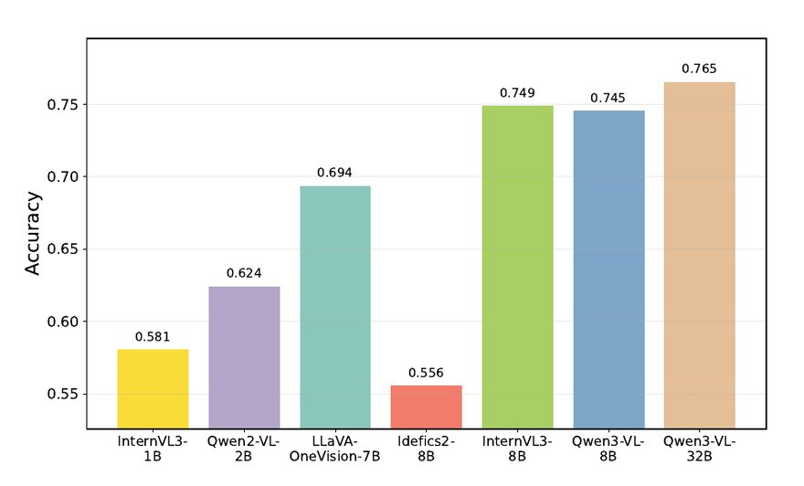

Atomic Visual Entailment
Master's thesis. Decomposing hypotheses into atomic facts so frozen vision-language models can be checked claim by claim — no fine-tuning, no API cost.
Zero-shot accuracy on SNLI-VE improved by 12–25 percentage points over prior zero-shot and hybrid methods.
- PyTorch
- Qwen
- InternVL
- XGBoost
- Grounding DINO